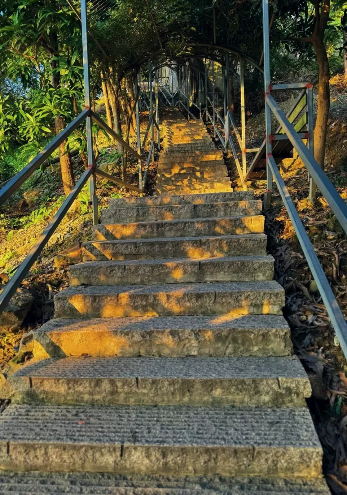
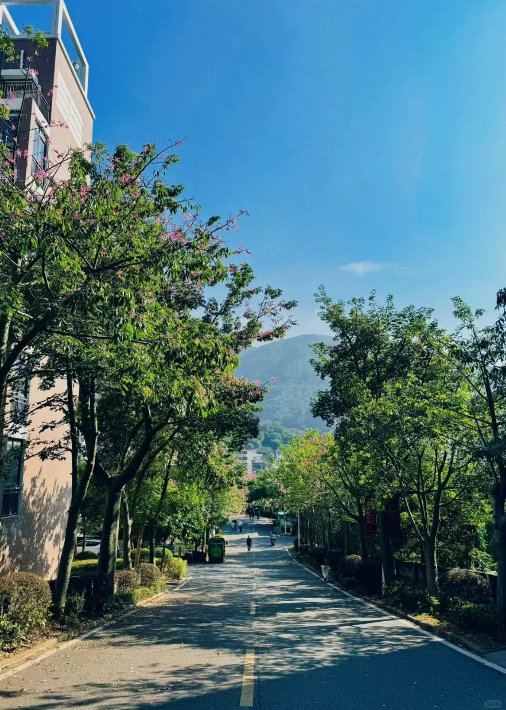

枝叶层层叠叠织成天然凉棚，下课路上慢慢走，把匆忙的节奏放轻。

草木岁岁常青，花开花落自有时序，满眼生机，是蓬勃向上的福气。
黄昏是校园的温柔限定，橘色霞光铺满天际，治愈一整天的疲惫。
晴天的午后，阳光穿过树叶，在步道台阶投下晃动光斑。很多同学会停下脚步，踩一踩流动的光影，简单又治愈。
春天冒新芽，夏天绿荫浓密，秋天晚霞格外好看。不用出校门，就能跟着草木感受时节流转。
这里是同学们的天然取景地，结伴拍照、记录校园时光，一张张照片，留住属于福外的青春记忆。
校园以景育人，生机盎然的环境，寓意平安顺遂、向阳生长。这是校园送给每一位学子独有的福气。
校园风光，是无声的课堂。一草一木承载着温柔的福韵，陪伴一届又一届学子奔赴理想。
愿我们在认真读书之余，不忘抬头看云、驻足赏景，在平凡日常里，接住这些细碎又珍贵的福气。
← 返回校园福韵